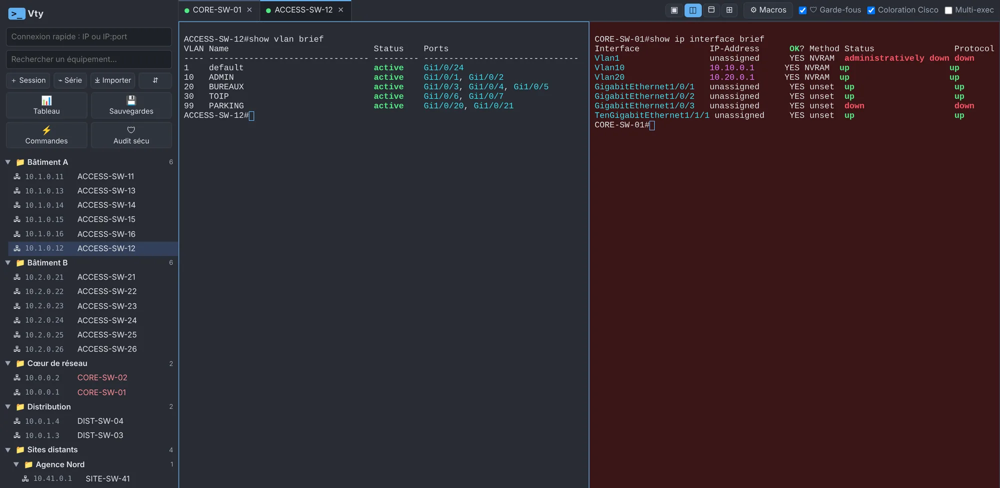
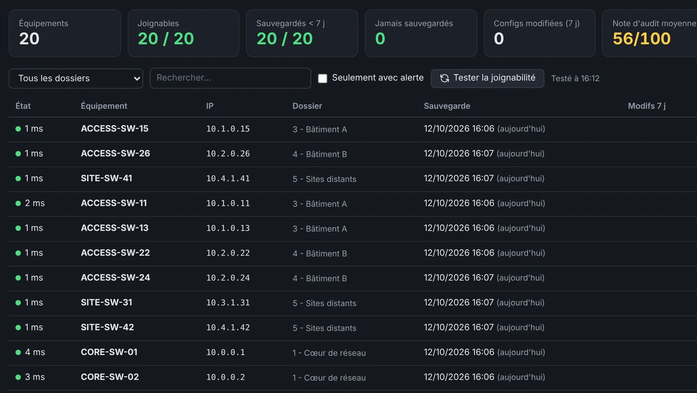
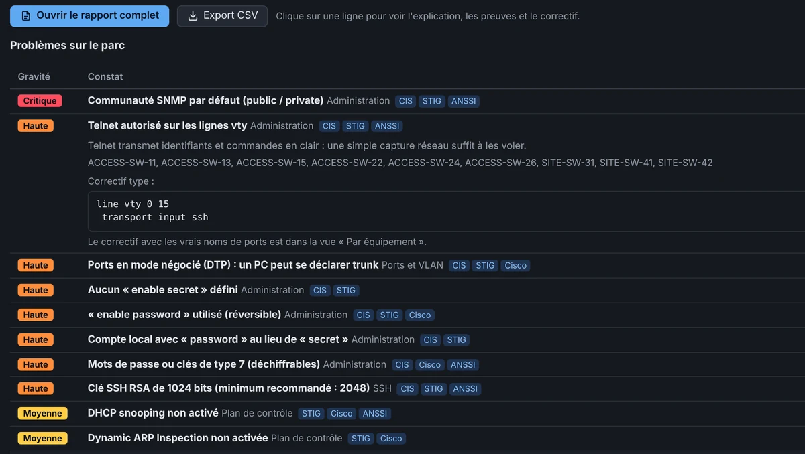
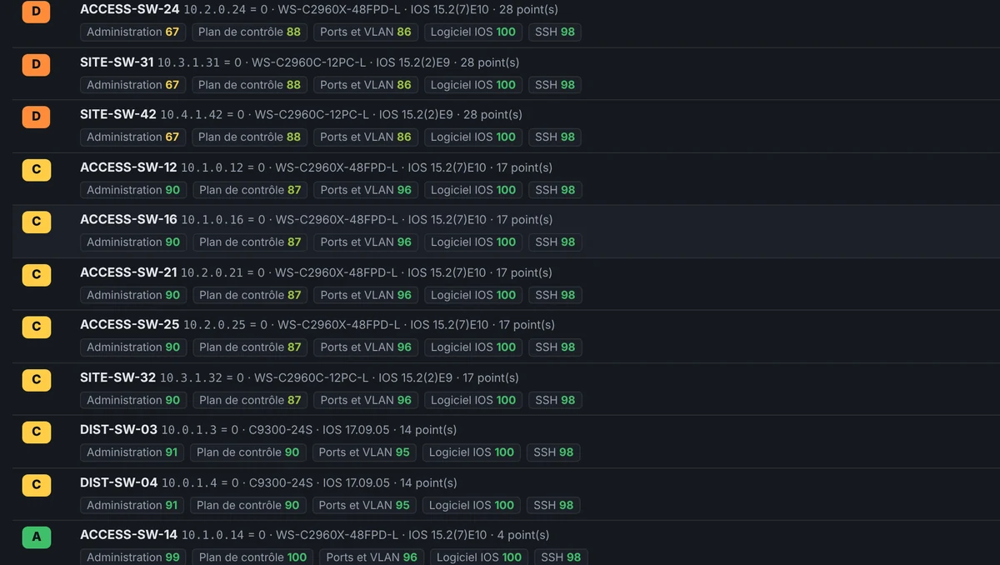

Vty réunit tes sessions SSH, les sauvegardes de configs, l'audit de sécurité et les commandes en masse dans un seul outil. Fini les vingt fenêtres PuTTY et les copier-coller d'un switch à l'autre.
Vty a été écrit par un ingénieur réseau, pour les moments où la console devient un problème au lieu d'un outil.
Qu'est-ce qui a changé sur le switch du 2e étage depuis la semaine dernière ?
Vty sauvegarde les configs de tout le parc en un clic, six équipements à la fois. Une version n'est gardée que si la config a changé, et la comparaison te montre les lignes ajoutées ou retirées.
ProSauvegardes et comparaison
Il faut le VLAN 30 sur quarante switchs avant ce soir.
Coche les onglets, tape la commande une fois : elle part sur tous. Pour les gestes de tous les jours (port ToIP + PC, VLAN sur un trunk, port err-disabled), les macros vérifient les champs et montrent un aperçu avant l'envoi.
ProMulti-exec et macros
L'auditeur passe jeudi.
82 contrôles inspirés du CIS, du DISA STIG et de l'ANSSI. Chaque switch reçoit une note de A à E, chaque problème arrive avec son correctif prêt à coller, et tu repars avec un rapport HTML. Ta version IOS est aussi comparée aux failles connues de Cisco.
ProAudit de sécurité
J'ai tapé reload dans le mauvais onglet.
Vty intercepte les commandes dangereuses avant qu'elles partent, même abrégées (rel, wr er, sw tr al vl). Pour les plus graves, il faut taper CONFIRMER. Les équipements critiques s'affichent en rouge.
GratuitGarde-fous
Sessions SSH, écran partagé, macros, sauvegardes, commandes en masse, audit et garde-fous, filmés sur un parc fictif de 20 switchs.
Captures de la vraie application sur un parc d'exemple. Les noms et les adresses sont fictifs.




Multi-exec : tu tapes une fois, Vty l'envoie sur tous les onglets cochés.
Six équipements en parallèle, une version gardée seulement quand la config change, comparaison ligne à ligne.
82 contrôles, note de A à E, correctif prêt à coller et rapport HTML.
Comparée aux avis de sécurité Cisco PSIRT, avec la première version corrigée.
Commandes en lecture seule sur des centaines de switchs, filtre en direct, export CSV.
Port ToIP + PC, VLAN sur un trunk, port err-disabled : champs vérifiés, aperçu avant envoi.
SFTP / SCP, avec le MD5 vérifié par le switch après l'envoi.
Joignabilité, sauvegardes anciennes, notes d'audit et alertes sur un seul écran.
Vty tourne entièrement sur ton PC. Pas de compte, pas de cloud, pas de télémétrie.
Données d'exemple. Chaque constat donne l'explication, la preuve (secrets masqués) et le correctif avec les vrais noms de ports.
Une seule installation : la version gratuite devient Pro dès que tu colles ta clé de licence.
Sans limite de durée, sans inscription
Licence à vie · 1 an de mises à jour inclus
Envoie un e-mail avec l'objet « Vty Pro » à :
contact@getvty.comOu ouvrir ma messagerie. Tu seras prévenu le jour de l'ouverture des ventes.
Après la première année, ta version reste Pro à vie. Le renouvellement sert seulement à recevoir les nouvelles versions.
Le terminal fonctionne avec tout appareil joignable en SSH, Telnet ou console série. Les sauvegardes, l'audit, les macros et la recherche de failles sont faits pour Cisco IOS et IOS-XE.
Nulle part. Vty te les demande à la connexion et les garde en mémoire le temps nécessaire, sans jamais les écrire sur le disque. Pour une clé SSH, seul son emplacement est enregistré ; la phrase secrète est redemandée.
Oui, sans limite de durée et sans inscription. Elle est limitée à 25 équipements enregistrés ; les fonctions de gestion du parc (sauvegardes, audit, multi-exec…) demandent la licence Pro.
Oui : l'installeur n'est pas encore signé. Clique sur « Informations complémentaires », puis « Exécuter quand même ». Tu peux vérifier le fichier avec son empreinte SHA-256 et l'analyse VirusTotal, plus bas sur cette page.
Non. Vty fonctionne sur un réseau isolé, licence comprise. Il vérifie seulement s'il existe une nouvelle version au démarrage (désactivable), et la recherche de failles Cisco ne contacte Cisco que si tu la lances.
45 € HT par utilisateur, une seule fois. Ta version reste Pro à vie, avec un an de nouvelles versions inclus. Les ventes ouvrent bientôt : laisse ton e-mail dans la section Tarifs pour être prévenu.
Interface repensée : icônes nettes à la place des emojis, menus, fenêtres et tableaux plus lisibles, barres de défilement discrètes, petites animations. Terminaux plus fluides : affichage par la carte graphique (désactivable dans le menu langue en bas à gauche), même avec de gros « show » et 4 terminaux à l'écran. Tableau de bord, audit et commandes en masse mis à jour ligne par ligne : plus de saccades pendant les traitements, les détails ouverts restent ouverts. Barre d'outils compacte quand la fenêtre est étroite, onglets qui défilent à la molette, barre latérale réglable en largeur (glisser son bord). La date de sortie s'affiche à côté du numéro de version dans la fenêtre de mise à jour ; la vérification des failles Cisco ne se lance que si sa case est cochée.
Vty en anglais : l'interface suit la langue de Windows (français ou anglais), avec un choix manuel en bas à gauche (FR / EN). Messages, rapports d'audit, journaux de session et macros fournies traduits ; les dates s'affichent au format AAAA-MM-JJ en anglais. Site en anglais : getvty.com/en.
Connexion par clé SSH (OpenSSH, PEM, PKCS#8) ou par agent (Pageant, agent OpenSSH de Windows) : seul l'emplacement de la clé est enregistré, la phrase secrète est demandée à chaque connexion. Telnet pour les vieux équipements, avec un bandeau « non chiffré » bien visible. Journaux de session automatiques dans des fichiers texte (désactivés par défaut, réglables par équipement). Import des sessions MobaXterm et PuTTY (dossiers conservés, identifiants jamais importés). Mauvais mot de passe : Vty redemande au lieu de couper.
Exemples et textes de l'audit rendus génériques (supervision SNMP, collecteur syslog / SOC), VLAN par défaut des macros : 20 et 30. Site : aperçu de partage et icône.
Vty signale les nouvelles versions au démarrage, avec les nouveautés et un lien vers le site (désactivable dans la fenêtre Licence). Rien n'est téléchargé ni installé automatiquement, et aucune donnée n'est envoyée.
Version gratuite (SSH, console série, garde-fous, 25 équipements) et version Pro (tout le reste, équipements illimités). Licence Pro à vie, vérifiée sur le poste sans connexion Internet, avec 1 an de mises à jour.
Première version publique. Audit sécu avec risques acceptés et date de revue, rapport HTML, politique de sécurité personnalisable.
Installe, importe tes sessions PuTTY, MobaXterm ou un CSV d'équipements, et connecte-toi. La même installation sert pour la version gratuite et la version Pro.
Analyse VirusTotal de l'installeur : aucun des 62 antivirus ne signale de problème, version 1.7.0
Si Windows affiche « Windows a protégé votre ordinateur » : Informations complémentaires, puis Exécuter quand même. L'installeur n'est pas encore signé.
SHA-256 : 1f585903a0921ccdcb13b777a669f348ebc398e4e8c37f72e1084e6d5dd88142